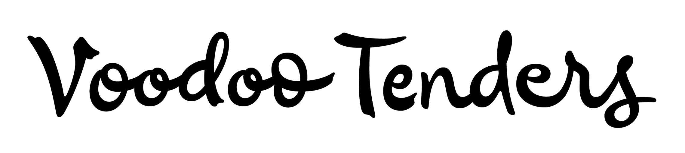

class: section, middle # Type and Code ## Programming Language --- class: section, middle ## Python --- <section class="tree"> <div class="node"> Guido van Rossum <div class="role">Designed Python</div> <img src="img/python.png" class="logo" alt="python logo"> </div> <div class="node"> Just van Rossum <div class="role">Type tools, creator of RoboFog (with Petr & Erik van Blokland), precursor of RoboFont font editor, of TTX/FontTools library which is a crucial part of most font editors, and the author of the original version of the <a href="https://www.drawbot.com/">DrawBot application</a> for teaching Python scripting in a visual way.</div> </div> -- <div class="node"> Petr van Blokland <div class="role">Creator of RoboFog (with Erik van Blokland & Just van Rossum), and an evangelist for building your own custom tools and workflows for designing. Co-founded TypeNetwork, an online typeface marketplace, with Font Bureau, David Berlow, Roger Black and others. <a href="https://designdesign.space/">designdesign.space</a>.</div> </div> <div class="node"> Erik van Blokland (The Cube) — LetError <div class="role">Type designer and programmer. Collaboration with Just began with publishing the zine <em>Letterror</em>, which demonstrated their experiments with generative type, now the name of Erik’s <a href="https://letterror.com/">foundry</a>. Designed FF Beowolf along with Just.</div> </div> -- <div class="node"> Frederik Berlaen <div class="role">Creator of the RoboFont App, undr his studio <a href="https://typemytype.com/">TypeMyType</a></div> </div> <div class="node"> Georg Seifert & Rainer Erich Scheichelbauer <div class="role">Creators of the Glyphs App</div> </div> </section> -- <figure> <figcaption>Monty Python Comedy Troupe<a href="https://www.imdb.com/title/tt0071853/" target="_blank">Source</a></figcaption> </figure> ??? Python is a reference to the Monty Python comedic sketch. It’s meant to be fun. --- <figure> <img src="img/macro-panel.png" alt="Macro Panel"> <figcaption>Glyphs App Macro Panel (option + command + M) </figcaption> </figure> --- class: middle ## Randomness --- <figure> <figcaption>Erik van Blokland, Just van Rossum. FF Beowolf. 1990 <a href="https://www.moma.org/collection/works/139326" target="_blank">Source</a></figcaption> </figure> -- <figure class="video"> <iframe src="https://player.vimeo.com/video/49548029?autoplay=1&loop=1&portrait=0&byline=0" frameborder="0" allow="autoplay; fullscreen; picture-in-picture" allowfullscreen></iframe> <figcaption><a href="https://vimeo.com/49548029">Is Best Really Better</a>, illustration of FF Beowolf, from Erik van Blokland & Just van Rossum</figcaption> </figure> --- class: middle ## Parametric Designs --- <figure> <figcaption>Metaflop Modulator <a href="https://www.metaflop.com/modulator" target="_blank">Source</a></figcaption> </figure> -- <figure> <figcaption>Amstelvar Variable <a href="https://v-fonts.com/fonts/amstelvar" target="_blank">Source</a></figcaption> </figure> -- <figure> <figcaption>Universal Sans <a href="https://universalsans.com/" target="_blank">Source</a></figcaption> </figure> --- class: middle ## Response / Data Visualization --- # Physics and Nature -- <figure class="video"> <iframe src="https://player.vimeo.com/video/65248695?autoplay=1&loop=1&portrait=0&byline=0" frameborder="0" allow="autoplay; fullscreen; picture-in-picture" allowfullscreen></iframe> <figcaption><a href="https://vimeo.com/65248695">Letter & Spirit</a> from >Dexter Sinister</a></figcaption> </figure> --- <figure> <figcaption>helvetica_on_the_earth.ttf by Weiyi Li<a href="http://weiyiandfriends.com/practice2017.html" target="_blank">SOURCE</a></figcaption> </figure> -- <figure> <figcaption>helvetica_on_the_earth.ttf by Weiyi Li<a href="http://weiyiandfriends.com/practice2017.html" target="_blank">SOURCE</a></figcaption> </figure> --- <figure> <figcaption>Climate Crisis Font by Helsingin Sanomat<a href="https://kampanjat.hs.fi/climatefont/" target="_blank">SOURCE</a></figcaption> </figure> --- <figure> <figcaption>Hello from Here generative posters <a href="https://hellofromhe.re" target="_blank">SOURCE</a></figcaption> </figure> -- <figure> <img src="img/wind.gif" alt="Wind"> <figcaption>Wind by Hansje van Halem <a href="https://www.typotheque.com/fonts/wind/" target="_blank">SOURCE</a></figcaption> </figure> --- # Sound -- <figure> <figcaption>Phase by Elias Hanzeer <a href="https://www.eliashanzer.com/phase/" target="_blank">SOURCE</a></figcaption> </figure> -- <figure> <figcaption>Goertek by Kontrapunkt <a href="https://www.kontrapunkt.com/work/goertek" target="_blank">SOURCE</a></figcaption> </figure> --- # Network Conditions -- <figure> <figcaption>A-B-Z-Times.ttf by Brian Brian H</figcaption> </figure> -- <figure> <figcaption>A text that strengthens from collective readership: an outcome from the workshop at ABZ conference.<a href="http://www.designforthe.net/workshops/lan/index.html" target="_blank">SOURCE</a></figcaption> </figure> ??? Part of a workshop Local Area Network, led by Mindy Seu, Jon Gacnik, and Jürg Lehni, at ABZ conference. --- class: middle ## OpenType --- <figure> <figcaption>Open Type features are accessible from the character panel in InDesign</figcaption> </figure> -- <figure> <figcaption>Font Info, Features panel</figcaption> </figure> -- <div class="text"> Read more about feature-writing on <a href="https://opentypecookbook.com/" target="_blank">OpenType Cookbook</a> </div> --- --- class: middle ## Contextual Alternates ??? OpenType features can ensure that similar forms are unlikely to appear adjacent to one another, often used to add texture or simulate the organic spontaneity of handwriting or setup specific logics for substituting glyphs --- <figure> <figcaption>Delvard Gradient by Nikola Djurek. <a href="https://www.typotheque.com/fonts/delvard_gradient" target="_blank">SOURCE</a></figcaption> </figure> -- <figure> <figcaption>SALT Galata Website<a href="https://saltonline.org" target="_blank">SOURCE</a></figcaption> </figure> -- <figure class="video"> <iframe title="vimeo-player" src="https://player.vimeo.com/video/31918129?h=63735274c8?autoplay=1&loop=1&portrait=0&byline=0" frameborder="0" allowfullscreen></iframe> <figcaption>Julien by Peter Biľak,<a href="https://www.typotheque.com/fonts/julien" target="_blank">SOURCE</a></figcaption> </figure> --- <figure> <figcaption>Chicken Script, by Victoria Rushton for Popeyes Chicken</figcaption> </figure> -- <figure>  <figcaption>Chicken Script, by Victoria Rushton for Popeyes Chicken</figcaption> </figure> ??? - Each lowercase character had 3 versions - One feature alternates between two versions of the lowercase - Another feature placed the third version with a more expressive outstroke at the ends of all words --- <figure> <figcaption>Calcula by Shiva Nallaperumal</figcaption> </figure> -- <figure> <figcaption>Calcula by Shiva Nallaperumal. <a href="https://www.typotheque.com/articles/calcula" target="_blank">design process</a> </figcaption> </figure> ??? They might also allow for special interlocking features beyond standard ligatures --- class: middle, bottom ... the most likely place a “writer” might usefully “produce” today is in The Hollows. ( — Dexter Sinister: Letter & Spirit)